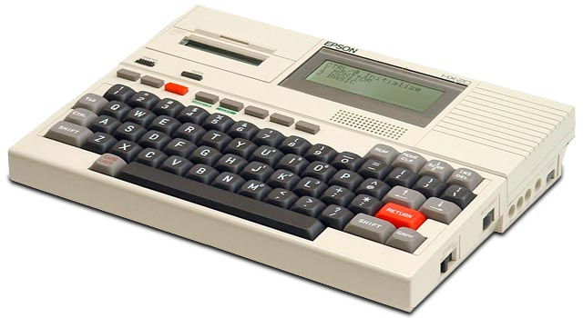
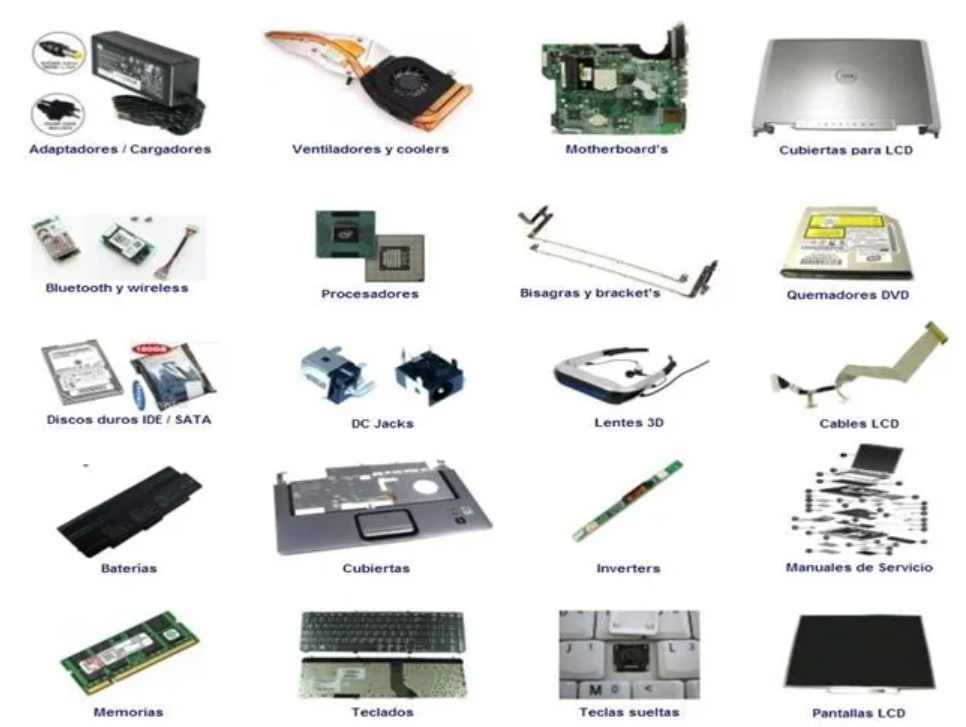

Resumen sobre información de las laptops
Las laptops son pura comodidad a donde sea que las llevemos, lamentablemente por esta comodidad se paga más
dinero. Todo dispositivo (hardware) en las laptops o portátiles es construido en una versión “mini” de
computadoras normales (desktops). Esto hace que las laptops sean más sencillas y vulnerables. Así como cualquier
otra computadora, los componentes de las laptops tienen una vida limitada. Un día se tendrá que dañar el disco
duro, el motherboard o el procesador, este límite lo decide el trato que le das a tu laptop. Por eso es
importante cuidarlas, darle su mantenimiento y tratar de alargarle la vida.
Como computadoras personales, los notebooks son capaces de hacer el mismo trabajo que una computadora de
escritorio. Son menos poderosas (hablando de capacidad de procesamiento, memoria, capacidad de almacenamiento,
etc.) que las computadoras de escritorio que están en la misma categoría de precio. La razón de esto radica en
que la mayoría de las partes usadas en notebooks son miniaturizadas para caber dentro del gabinete de la
notebook.
Actualmente se está desarrollando las netbook que son una miniaturización de las notebook y como consecuencia
presentan la sustracción de ciertos elementos a veces imprescindibles como la lectora de cd y el Disk Drive,
elementos que es requerido pocas veces por algunos usuarios además de presentarse como una opción práctica y
económica sobre todo en el mercado latinoamericano en donde han tenido mayor acogida sobretodo en las marcas
Hacer y HP.
Este trabajo logra dar a conocer desde un aspecto más cercano lo que es una laptop, como está compuesta, sus
marcas más famosas y sobre todo lo que toda personas le interesa al momento de comprar una sus ventajas y
desventajas.
Historia

La primera computadora portátil considerada como tal fue la Epson HX-20, desarrollada
en 1981, a partir de la cual se observaron los grandes beneficios para el trabajo de científicos, militares,
empresarios y otros profesionales que vieron la ventaja de poder llevar con ellos su computadora con toda la
información que necesitaban de un lugar a otro.
La Osborne 1 salió al mercado comercial con el formato que actualmente los distingue, aunque entonces eran
sumamente limitadas, incluso para la tecnología de la época.
En 1995, con la llegada de Windows 95, la venta de las portátiles se incrementó notablemente, y en la actualidad
rebasa las ventas de los equipos de escritorio.
En el tercer trimestre de 2008, las ventas de las portátiles superaron por primera vez las de los equipos de
escritorio, según la firma de investigación iSuppli Corp.
Componentes
Muchos de los componentes de un ordenador portátil son similares a los
componentes de los ordenadores de escritorio, pero habitualmente son de menor tamaño, con componentes similares,
algunos de los cuales se citan a continuación:
- CPU de bajo consumo: Intel Core i3/i5/i7, Intel Core 2 Duo, Intel Core, Intel Atom (en equipos de 10,1″ o
inferior), AMD Turion, AMD Phenom o AMD Fusion.
- Disco duro de 2,5″ (6,35 cm) o menor, frente a los discos de 3,5″ (8,89 cm) de los ordenadores de
escritorio. También Unidades de estado sólido
- Módulos de memoria RAMSO-DIMM (Small Outline DIMM) más pequeños que los DIMM usuales en los ordenadores de
escritorio.
- Unidad lectora y grabadora de CD, DVD o Blu-Ray de formato reducido (slim).
- Teclado integrado, que suelen tener una distancia de recorrido más corta para las combinaciones y para un
reducido grupo de teclas. No suele contar con teclado numérico y las teclas de función pueden estar colocadas
en sitios que difieren de un teclado de ordenador de sobremesa.
- Panel táctil para manejar el puntero en lugar del ratón.
- Batería, que suele tener típicamente una duración de 2 a 4 horas en equipos de 15,6″. Una batería de 6
celdas en un netbook con Intel Atom puede proporcionar una duración de unas 6 horas dependiendo del modelo y
el uso.

Caracteristicas
Por lo general funcionan con una batería o con un adaptador que permite tanto cargar
la batería como dar suministro de energía (incluso con el ordenador apagado, generalmente mediante el puerto
USB). El Consorcio Wireless Power está desarrollando una especificación para la recarga inalámbrica de las
baterías de los ordenadores portátiles. Suelen poseer una pequeña batería que permite mantener el reloj y otros
datos en caso de falta de energía.
En general, a igual precio, los portátiles suelen tener menos potencia que los ordenadores de mesa, incluso
menor capacidad en los discos duros, menos capacidad gráfica y audio, y menor potencia en los microprocesadores.
De todas maneras, suelen consumir menos energía y son más silenciosos. Suelen contar con una pantalla LCD y un
pad táctil.
En general cuentan con tarjeta PC (antiguamente PCMCIA) o ExpressCard para tarjetas de expansión. No hay todavía
un factor de forma industrial estándar para los portátiles, es decir, cada fabricante tiene su propio estilo de
diseño y construcción. Esto incrementa los precios de los componentes en caso de que haya que reemplazarlos o
repararlos, y hace que resulten más difíciles de conseguir. Incluso a menudo existen incompatibilidades entre
componentes de portátiles de un mismo fabricante.